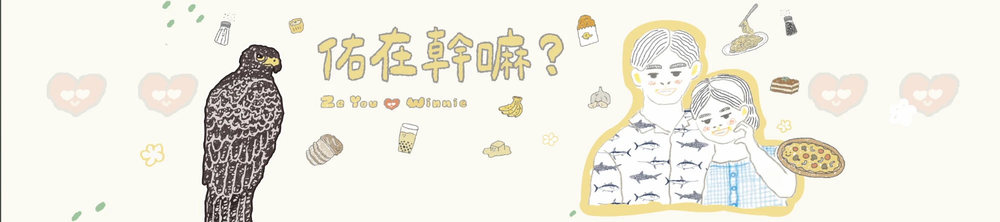

X-RAY · 台灣史上第一次
她的身體裡，有兩顆子彈。
有人拿槍射她，扣下扳機後，她沒死，於是又發射了第二發。這是台灣史上第一次，在石虎體內發現子彈。她帶著這兩顆子彈，只要再偏一公分就會當場斃命，卻還哺育了她好多個孩子。

全台灣的石虎，只剩0不到 600 隻。
這是其中一隻的一生。她叫豆棗。
請你，好好認識她。
246 公克，比一瓶奶茶還輕
是兩隻雙胞胎小寶寶。但其中一隻，已經沒有了呼吸。活下來的這一隻，身上爬滿跳蚤，眼睛都還沒張開，體重只有兩百多克。他才剛剛來到這個世界，就已經失去了他的弟弟。
那年春天，他被送到南投特生中心。他小到一個手掌就能握住，在掌心裡不斷發抖、喘氣，找媽媽的奶，但已經找不到媽媽了。既然身上爬滿了跳蚤，那就叫他豆棗吧。
晚上他被放進保溫箱，每兩個小時，保育員就要來餵一次奶。看他努力吸著奶，嘴這麼小、這麼瘦、卻這麼努力。第二週，他開始長肉；一個月後，他終於張開眼睛。那個十隻活不過八隻的關卡，他跨過去了。
研究員想把他野放。但過去被追蹤的野放石虎，活下來的不到四分之一。這一次，他們決定把標準拉到最高：不只要把他養活，還要把他訓練成一隻真正的野生石虎。
從那天起，所有照顧豆棗的人，都要戴上「怪叔叔」面具。因為太多石虎被人養大後野放，卻活不下去：看到人不會跑，看到狗不會躲。所以豆棗睜開眼，看見的永遠只是奇怪的面具。這群人，努力不讓他愛上自己。
但研究員心裡有個莫大的恐懼。因為在這之前，他們才送走了秋哥，一隻用同樣方式訓練長大的石虎，野放才十幾天，就被流浪犬咬死了。送回來的那天，正好是中秋節。
他像火箭一樣，噴射進森林
豆棗被野放到南投集集的森林邊緣，遠離馬路、也遠離村莊，身上帶著發報器。打開籠子的瞬間，他一點也沒有猶豫，像火箭一樣衝進森林。
打開籠門，他像火箭一樣噴進森林，沒有一絲猶豫。
他一路移動，去過農田，也經過危險的馬路。
他在一塊不放農藥、不用除草劑、也沒有毒鼠藥的水稻田旁，停了下來。
他為什麼停下來了？研究員後來發現，那塊田，是有人用一輩子的溫柔，默默守護出來的。
陳裕仁，當年六十幾歲，退休前是個工程師。那年他回老家種田，不用農藥、不用除草劑，也不用毒老鼠的藥。收入少、工作累。在最疲憊的那幾天，他總問自己：這樣做，真的有意義嗎？
就在那幾天，有人敲門。是特生中心的研究員。他們拿出一張照片，照片裡是一隻石虎，正走在一片他熟悉得不得了的田裡。那是他每天巡的田。他們告訴他，這隻石虎，已經在這裡住了好幾個月。
研究員後來追蹤發現，豆棗有 80% 的時間都待在農地，從沒有一隻石虎這麼依賴農田。她證明了一件事：只要農地夠安全，石虎就能住進來、幫農民抓老鼠、生下孩子，把這裡變成她的家。
一隻孤兒石虎，被救起、被養大、被訓練、被野放，然後在野外活下來、找到家、生下下一代。這是台灣石虎保育史上，第一次有個體完整走完這條路。她讓研究員相信了一件等了很多年的事：台灣的石虎，是有未來的。
點一下每一個孩子，看看牠後來怎麼了
在那塊田裡的三年兩個月，豆棗總共生了五胎、十個孩子，七個活了下來。那段時間，研究員每天進辦公室第一件事，就是去看豆棗的自動相機。他們不該喜歡她，但還是喜歡上了。因為這隻石虎，給了他們一個等了很多年的東西：希望。
而每一場，背後都是人
那天下午，一個農夫像平常一樣，把田邊的雜草放火燒掉。火苗越燒越大。就在那片火海裡，一隻石虎像風一樣飛躍出來，嘴裡叼著她的孩子。那是豆棗。她放下第一隻，強忍著剛被火燒到的傷口，又衝回火裡，救出第二隻。
但三天後，研究員在焦黑的農田一角，找到兩隻剛滿月的寶寶。一公一母，蜷縮在一起，被燒成焦炭。那天晚上，豆棗回到那片空蕩蕩的田，靜靜坐著，動也不動，坐了好久好久。
幾個月後，我們都錯了。豆棗又懷孕了。這次她把寶寶藏在灌溉溝渠旁。但那條溝渠是水泥做的。一場連下好幾天的暴雨，溝渠暴漲，孩子跌落後，怎麼也爬不出那道又直又滑的牆，就這樣被洪水沖走了。
問題從來不是技術本身，而是我們在使用這些技術的時候，沒有把其他的生命，放進去一起思考。
失去過三個孩子的豆棗，在那年冬天，竟然又生了第四胎，一次三隻。她照樣教孩子怎麼跳水溝、怎麼抓老鼠、怎麼避開火與水，三個孩子，通通平安長大。接著，她又生下第五胎，一樣三隻。四歲的她，成了那片田裡年紀最大、最有智慧的老石虎，而野外石虎的平均壽命，不過三到五歲。
獸醫師看了又看，一句話也沒說
那是一次例行的健康檢查。她被麻醉後，安靜躺著。最後照 X 光，當螢幕亮起，獸醫師看了又看，卻一句話也說不出來。螢幕上有兩個小光點，一個在背部，一個在胸口。不是器官，也不是骨頭，是金屬。
有人拿槍射她，扣下扳機後，她沒死，於是又發射了第二發。這是台灣史上第一次，在石虎體內發現子彈。她帶著這兩顆子彈，只要再偏一公分就會當場斃命，卻還哺育了她好多個孩子。
但真正帶走她的，不是子彈。那天上午，研究員收到訊號異常的通知：豆棗沒有移動。他們飛奔上山，走進人煙罕至的雜木林，然後看見了最不想看見的畫面。豆棗靜靜躺在地上，沒有了心跳，也沒有了所有的病痛。
解剖時掀開皮毛，原本看似一點點的傷口，原來不是一隻狗，是一群狗。她被追上樹，狗在下面狂抓樹幹，她爬得更高，樹枝斷了，掉下來，才被追上。
為了省事放火燒田邊雜草，兩隻剛滿月的寶寶被活活燒死。
又直又滑的水泥溝渠，讓跌落的孩子再也爬不出來。
兩顆子彈留在她體內。她活了下來，帶著疼痛養大孩子。
一群來歷不明的狗，最終奪走了這隻最有智慧的老石虎。
每一個人，都不認識她。
每一個人，也都覺得自己沒有錯。
豆棗死的那天晚上，南投那塊田的主人陳裕仁，還不知道消息。他什麼都不知道就睡著了。然後他做了一個夢，他夢到家裡的貓，死了。他曾說：「我不會做夢的。」但那一天，他做了。而那個夢，是真的。
研究員後來在豆棗倒下的地方，多放了一台自動相機。三天後，畫面裡出現一隻小石虎，從草叢走出來，走到媽媽倒下的位置，聞了聞地板，然後離開。第二天清晨，來了兩隻小石虎，到同一個位置，聞了聞地板，然後離開。
豆棗把孩子教得很好，他們可以自己狩獵、養活自己。
但也許，他們只是想媽媽了。
謝謝你，花時間認識了一隻你從來沒看過的動物。
她的孩子們，還在那塊田裡活著。
因為改變，從來都是從「有人在乎」開始的
她不上國際新聞、不會登熱搜。但你剛剛，陪她走完了一生。多數人，一輩子都不會知道有這隻石虎。
下次看到「石虎」「路殺」「友善耕作」，你不會再滑過去。在乎的人多一個，這件事就更難被忽視一分。
優先買友善耕作、綠色保育的農產品；不隨意餵養、棄養貓狗。豆棗的家，就是這樣一塊一塊被守住的。
當夠多人看見、在乎、行動，資源和政策才會跟上，才會有下一隻孤兒石虎，被救起、被養大、活下去。
你會認識豆棗，是因為有人願意花好幾個月，把一隻沒人知道的石虎，一筆一筆說成一個完整的故事。「佑在幹嘛？」是一個奈米級的獨立媒體，沒有廣告、沒有金主，只能在下班後擠出時間做。
如果豆棗的故事，在你心裡留下了什麼，請把這份心意，變成一點實際的支持，讓下一隻不該被遺忘的生命，也有人願意替牠說故事。
謝謝每一個願意把豆棗的故事看完、聽進去的你。
也謝謝豆棗，讓我們相信，人類的努力還是可以讓生態更豐富。